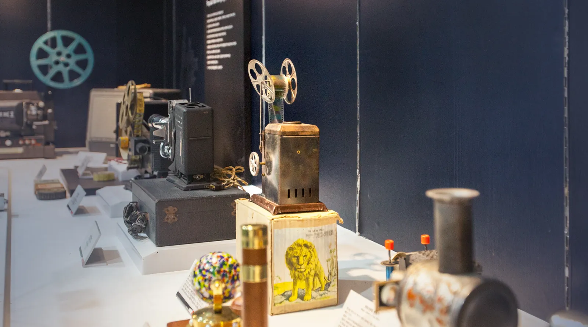
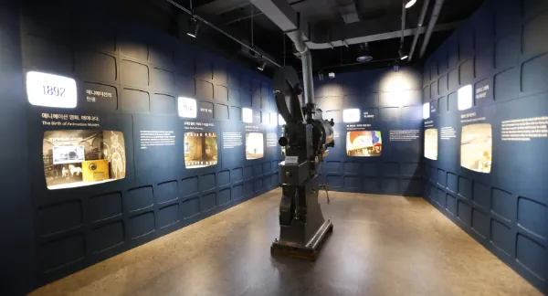
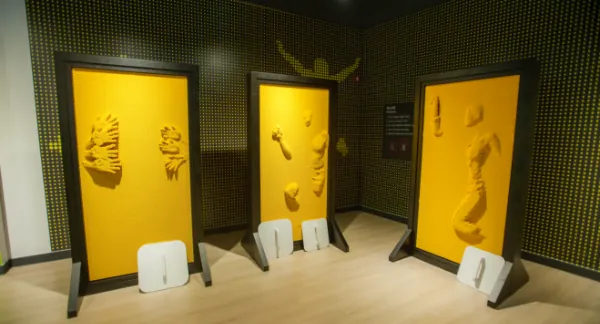
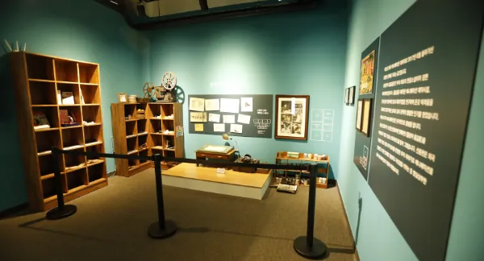
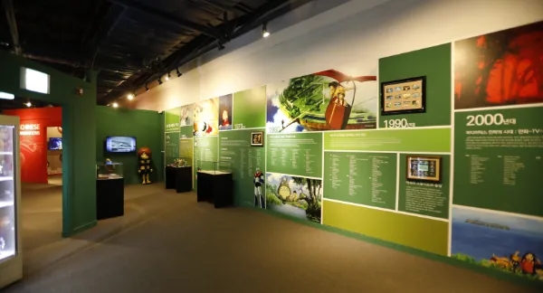
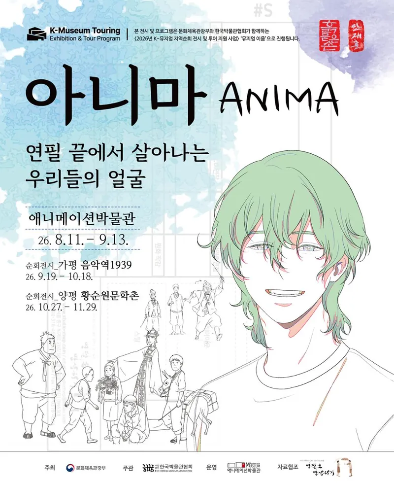

애니메이션박물관
…2003년부터, 우리나라에 하나뿐인
지금
0장/초
한 장씩 — 그림
엄지로 튕겨 넘겨 보세요끌거나 눌러서 넘겨 보세요 — 그림이 깨어납니다
관람 안내
화요일부터 일요일까지 문을 엽니다.
10:0018:00
- 입장 마감
- 17:00 · 박물관·토이로봇관 통합 관람도 17:00
- 정기휴관
- 매주 월요일 · 1월 1일 · 설·추석 당일
월요일이 공휴일이면 다음날 쉽니다 - 관람 시간
- 약 1시간 30분 – 2시간 · 오후 4시 전에 들어오시면 여유롭습니다
- 온라인 예매
- 당일 오후 3시까지 · 예매 1시간 뒤부터 입장
관람권 — 애니메이션박물관 + 토이로봇관, 전 연령 같은 요금
- 7,000원개인 · 사전예약
- 5,600원단체 20인 이상
- 5,000원춘천시민
단체와 춘천시민은 현장발권만 됩니다.
무료 24개월 미만 · 1~3등급 중증장애인(동반 1인) · 국가유공자(동반 배우자) · 자료 기증자(가족 포함) · 병역명문가(본인)
20% 할인 매월 마지막 주 수요일 '문화가 있는 날'(공휴일·7월 제외) · 만 18세 미만 자녀 2명 이상과 함께 오는 다자녀 가정
두 층, 한 바퀴
1층에서 애니메이션이 태어나고, 2층에서 직접 만들어 봅니다.
1F 애니메이션의 탄생과 발전
-

03영사기
영사기는 어떻게 시작되었을까요? 환등기에서 시작된 영사기의 발달 과정과 1890년대에 쓰인 유리필름을 만납니다.
-
 01
01동굴벽화
애니메이션은 무슨 뜻일까요? 기원전 1만 년경 알타미라 동굴에서 그 뜻과 원리를 알아봅니다.
-

021층 전시관
애니메이션의 탄생과 발전, 애니메이션의 종류, 한국 애니메이션의 역사를 영상과 자료로 봅니다.
-
04
상상의 계단
여러 애니메이션 포스터가 걸린 계단을 따라 2층으로 올라갑니다.
2F 몸으로 만나는 애니메이션
-

05애니메이션이랑 놀자
몸으로 느끼는 핀스크린, 주인공 체험, 캐릭터 변검 체험.
-
 06
06체험공간
소리를 만들어 내는 폴리아티스트 체험과 더빙 체험.
-

07메모리얼 홀
한국 애니메이션의 산 역사, 故 신동헌 감독의 기념 공간.
-

08세계관
나라마다 다른 애니메이션의 흐름을 한자리에서.
1층 뮤지엄샵·구름빵 카페 10:00–18:00 · 야외 캐릭터공원 · 2층 기획전시실(연 2회 이상 기획전) · 집에서 미리 보는 버추얼 뮤지엄 →
연필 끝에서 살아나는 우리들의 얼굴
기획전 《아니마 ANIMA》 — 박물관에서 시작해 지금은 순회 중입니다.

- 8.11 – 9.13애니메이션박물관춘천
- 9.19 – 10.18음악역1939가평
- 10.27 – 11.29황순원문학촌양평
2026년 K-뮤지엄 지역순회 전시 · 문화체육관광부·한국박물관협회 함께
박물관 갤러리 소식
- 전시42.195km, a Story on the Road 길 위의 이야기최순연
- 전시예술이야하나린주간보호소
- 전시A Hundred of whatnot — A collection of wearable designs백은기
오시는 길
강원특별자치도 춘천시 서면 박사로 854
- 1:10
ITX-청춘
용산역 → 춘천역 · 1시간 간격
- 1:20
경춘선 전철
상봉역 → 춘천역 · 20분 간격
- 1:10
시외버스
동서울터미널·고속터미널 → 춘천 · 약 20분 간격
- 서면
시내버스 서면3·4·5·6
춘천역 쪽에서 타고 '애니메이션박물관 입구' 하차
애니메이션박물관033-245-6470
토이로봇관033-245-6460